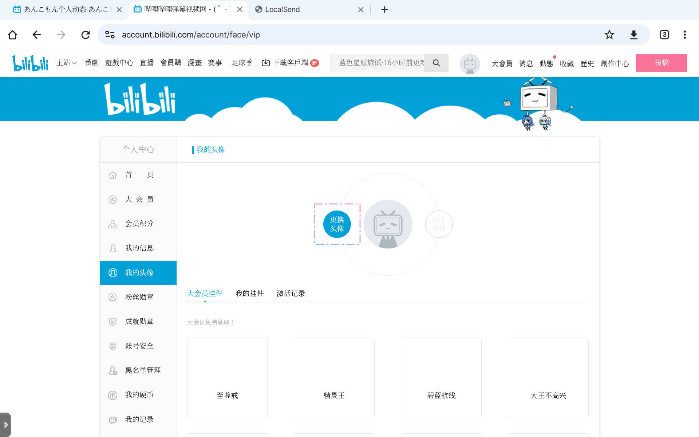

クイック登録
このページは、ユーザーがBilibiliユーザーとして迅速に登録し、名前、プロフィール写真などの情報を設定できるように設計されています。
- ビリビリ動画へアクセスする
- ログインしていない場合は、自動的にポップアップが表示されます。ポップアップ下部の青い「点我注册」をクリックしてください。
- アカウント登録が必要なため、「短信登录」(SMSログイン)を選択してください。
- 次に、「+86」をクリックし、ドロップダウンメニューから地域を選択します（日本は「+81」）。
- 携帯電話番号を入力し、「获取验证码」(認証コードを取得)をクリックしてください。
- 海外からのアクセスを保護するために、人機認証が必要です。漢字の出現順序通りにクリックしてから、「确认」ボタンを押してください。
- アカウント登録完了！おめでとうございます！
ただし、いいね、動画のアップロード、コメント投稿には「答题转正」が必要です… - マウスポインターをアバターに移動し、「答题转正直升Lv.1」をクリック
- 翻訳を利用して回答することができます。招待コードをお持ちの場合は、右下の「使用邀请码」ボタンをクリックし、コードを入力してから「提交邀请码」ボタンをクリックすると、回答をスキップできます。
- 右側のヒントに「现在得分 60」と表示されたら、「提前交卷」をクリックして残りの回答をスキップできます。
もし、自分自身に挑戦してより高いスコアを獲得したい場合は、好きなカテゴリを選択して回答してください。
- 続いて、終了ページでニックネームを設定してください！ニックネームは重複できません。例： 「レグ」がすでに使用されている場合は、「レグ_Regu」などを検討してください。下線には半角文字「_」を使用してください。そうでないと検索が困難になる可能性があります。
- マウスポインターをアバターに移動し、「个人中心」をクリック
- このページでは、アカウントを管理できます。ユーザー名、自己紹介、生年月日などの情報を変更するには、
「修改资料」をクリックしてください。アバターを変更するには、「我的头像」をクリックしてください。 - 「更换头像」をクリック
 - 「选择本地图片」をクリック
- 調整完了後、「更新」をクリックして、アバターを更新してください。
- その後、「通知設定」に切り替え、以下の4つの通知スイッチをオフにします。どれも重要ではない邪魔な通知です。
- 個人スペースに表示するコンテンツを設定できます。Producerの場合は、すべてオフにすることができます。または、誕生日情報のみを表示できます。
- 個人タグを設定するには、ページの一番下までスクロールしてください。最大5つまで設定できます。

- 「签名」（簡単な自己紹介）と「公告」（お知らせ）を順番に設定することもできます。
- OK！
あなたは基本プロフィールを設定しました！
投稿を始めましょう！